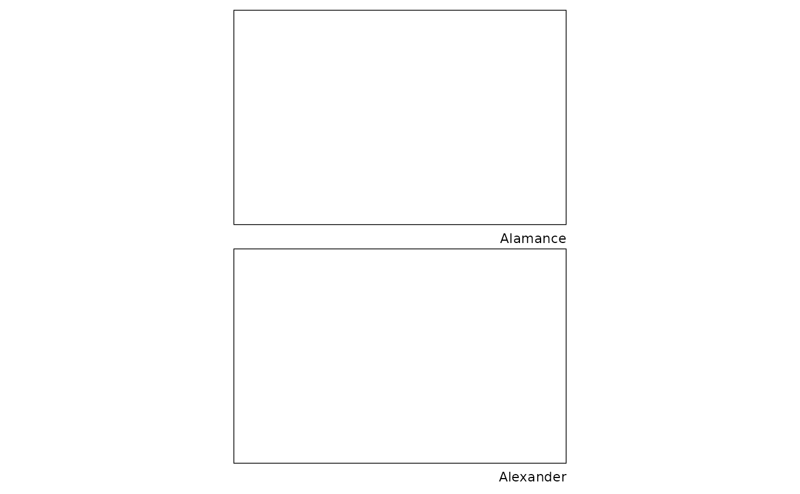

make_atlas() is a wrapper for papersize::page_layout() and
papersize::map_ggsave_ext() with the intent for taking a list of maps into
a set of patchwork plots and optionally save plots to file. The function is
similar to papersize::make_contact_sheets().
Usage
make_atlas(
plots,
dims = NULL,
ncol = NULL,
nrow = NULL,
page = "letter",
orientation = "portrait",
save = FALSE,
filename = NULL,
...
)Arguments
- plots
A list of ggplot2 maps to assemble into a set of sheet maps in an atlas format.
- dims
Optional. Plot dimensions. Ignored if ncol and nrow are supplied. Otherwise, if
NULL(default), dims are inferred based on the dimensions of the first plot in plots.- ncol, nrow
The dimensions of the grid to create. If both are
NULL, dims will be used or dims will be determined based on the plot dimensions.- page
Used by
get_page_dims(), page is either a character vector passed to the name parameter ofget_page_size(), a data.frame with column names matching the cols parameter, or a length 2 numeric vector with the page width and height.- orientation
Page orientation, Default:
NULL. Supported options are "portrait", "landscape", or "square".- save
If
TRUE, save atlas plots to files usingpapersize::map_ggsave_ext()Default: FALSE- filename
File name to create on disk.
- ...
Arguments passed on to
papersize::map_ggsave_extnamePlot name, used to create filename (if filename is
NULL) usingfilenamr::make_filename()labelLabel to combine with name converted to snake case with
janitor::make_clean_names(). The label is designed to identify the area or other shared characteristics across multiple data files, maps, or plots. label is ignored if name is NULL or if name includes a file extension.prefixFile name prefix. "date" adds a date prefix, "time" adds a date/time prefix; defaults to
NULL.postfixFile name postfix; defaults to
NULL.deviceDevice to use. Can either be a device function (e.g. png), or one of "eps", "ps", "tex" (pictex), "pdf", "jpeg", "tiff", "png", "bmp", "svg" or "wmf" (windows only).
fileextFile type or extension. Optional if filename or path include a file extension.
filetypeFile type (used if fileext is
NULL).pathPath of the directory to save plot to:
pathandfilenameare combined to create the fully qualified file name. Defaults to the working directory.overwriteIf
TRUE(default), overwrite any existing file with the same name or ask to overwrite ifask = TRUE. Passed tofilenamr::check_file_overwrite().single_file,onefileIf
TRUE, usegridExtra::arrangeGrob()to create an arrangelist class object thatggplot2::ggsave()can save as a single multi-page file. Note: this does not work with plots modified with patchwork including inset maps created with themaplayer::layer_inset()function.
Examples
nc <- sf::read_sf(system.file("shape/nc.shp", package = "sf"))
plots <- lapply(
dplyr::nest_by(nc, .by = NAME)[["data"]][1:4],
function(x) {
make_location_map(
basemap = ggplot(),
layer = layer_location(
data = x,
fill = "yellow",
alpha = 0.5
),
bg_layer = layer_location_data(
data = nc,
location = x,
asp = 8.5 / 5.5,
crop = FALSE
),
neatline = layer_neatline(data = x, asp = 8.5 / 5.5),
addon = labs_ext(caption = x$NAME)
)
}
)
make_atlas(
plots = plots,
page = "letter",
nrow = 2,
ncol = 1,
save = FALSE
)
#> ℹ Creating sheet map plots
#> ✔ Creating sheet map plots [22ms]
#>
#> $`1`

#>
#> $`2`
#>